Buy NFTs - the complete guide
Are you looking to get into the crypto world and interested in purchasing a Non-Fungible Token (NFT)? Then you are exactly right on this page. Step by step, this article will introduce you to an exciting new world and clarify all the important questions. First, let's clarify what NFT are and show you why you should buy them. Next, we recommend marketplaces and the tools necessary to buy and sell digital artwork.
General questions about NFTs
What are non-fungible tokens (NFT)?
In the context of blockchains, a token is a digital item that you can own. As you can see from the name "Non-Fungible Token", these tokens are not interchangeable. They are therefore unique. Typically, each of these individual items refers to something on the Internet - such as images, videos, music, 3D objects or other digital goods. So NFTs can be used as digital art, event tickets, trading cards, gaming items, or even proof of ownership for physical things.
How do NFTs map property on the blockchain?
First of all, let's ask ourselves a well-known question: Why should I buy a coveted item (e.g. a music file in MP3 format)? After all, you can also copy this file from friends or download it anonymously on the Internet? After the copy, both files are exactly the same. Once a file has been duplicated, it is very difficult to determine the rightful owner. It gets even more complicated if you want to resell the file. The new owner can no longer check the legality at all. He also can't be sure that the old owner really deleted all existing copies.
NFTs solve this age-old problem of computing. By means of the blockchain, digital goods can be owned verifiably. Of course it is still possible to copy data and files freely. But only the owner of the NFT is also the rightful owner of the thing linked to the token. The creation and transaction history of a non-fungible token are thereby recorded on the blockchain for all time.
What is the attraction of NFT?
Non-fungible tokens are currently experiencing a boom in the art, collectibles and gaming sectors. With the tokens, one acquires not only a tradable asset, but at the same time also the thing linked to it. This can be, for example, an appealing work by an artist. Of course, most market participants are speculating on an increase in value. But at the same time you can always enjoy the work of art, even if no new buyer can be found. From a technical point of view, there are no limits to the applications of NFT.
For example, there is nothing to say that an event ticket for a music band does not also entitle the holder to participate in a private chat. Or taking a precious magic sword from one role-playing game into another computer game. At the moment, NFTs mainly serve people's passion for collecting. For the future, we see blockchain and non-fungible tokens as a whole new digital world. Many technical basics such as the network infrastructure, the basic standards and of course the marketplaces already exist. In addition, there is already a large community that is excited about the topic and wants to be part of the "metaverse".
Continue reading in: → Background knowledge on blockchain tokens
Buying NFT: How it works
We recommend using the largest and most secure blockchain to get started. This is the blockchain Ethereum.
Let's go! We will guide you through the following steps:
- Install a wallet (MetaMask).
- Set up MetaMask.
- Equip your wallet with capital (including price comparison)
- Select an NFT marketplace.
- Select an appropriate NFT (presentation of 3 strategies).
- Buy an NFT.
If you have already done one of the steps, you are of course welcome to skip it.
1. Install a wallet (MetaMask)
A crypto wallet is a software that serves as a digital wallet. The wallet interacts with the blockchain and allows you to receive and send crypto coins. With Ethereum, a wallet can also invoke smart contracts, which allows you to receive and send blockchain tokens, among other things. We recommend the wallet "MetaMask", which is available as a browser plug-in for the computer. There is also an app from MetaMask for smartphones.
Attention! Always download MetaMask directly from the official website. Do not search for MetaMask in the app store. You might be downloading a scam! Therefore, it is best to enter the following website manually into the browser:
Click the "Download Now" button on the website. You will be redirected to the official app in the respective store. Via the now opened store entry you install the wallet. It's best to double check the number of users of the app. The official software MetaMask is very popular and has several million users. If the number differs greatly, caution is advised. Here you can see how the installation works with the Chrome browser:
{kind=link}
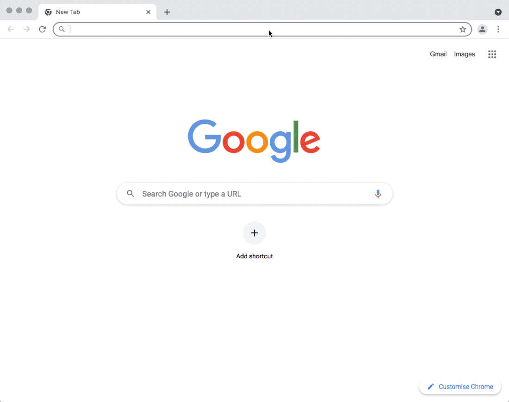
2. Set up MetaMask
Now let's set up the popular wallet MetaMask together. This process is mainly about generating a secret key ("Secret Recovery Phrase") and keeping it safe.
➊
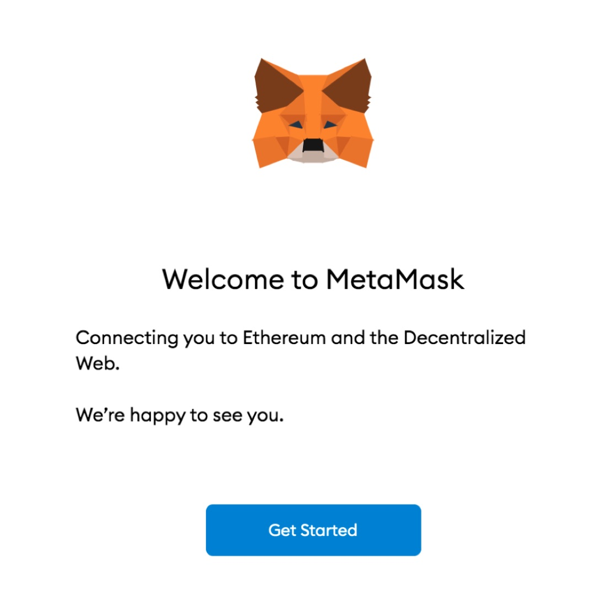
➋
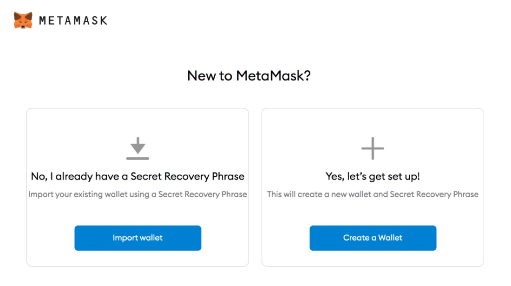
➌
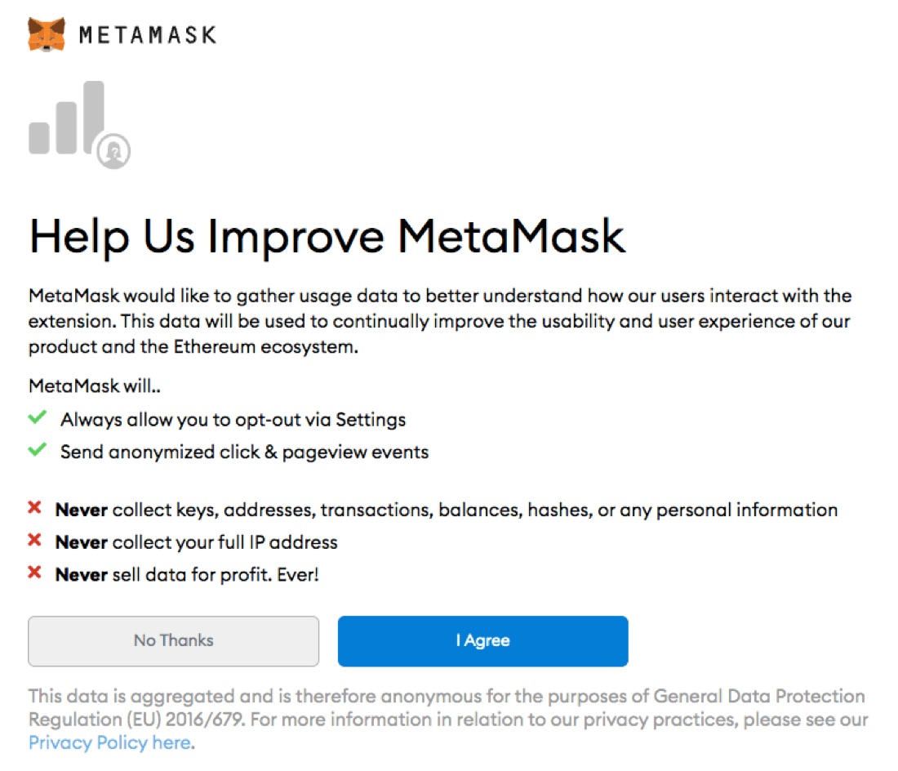
➍
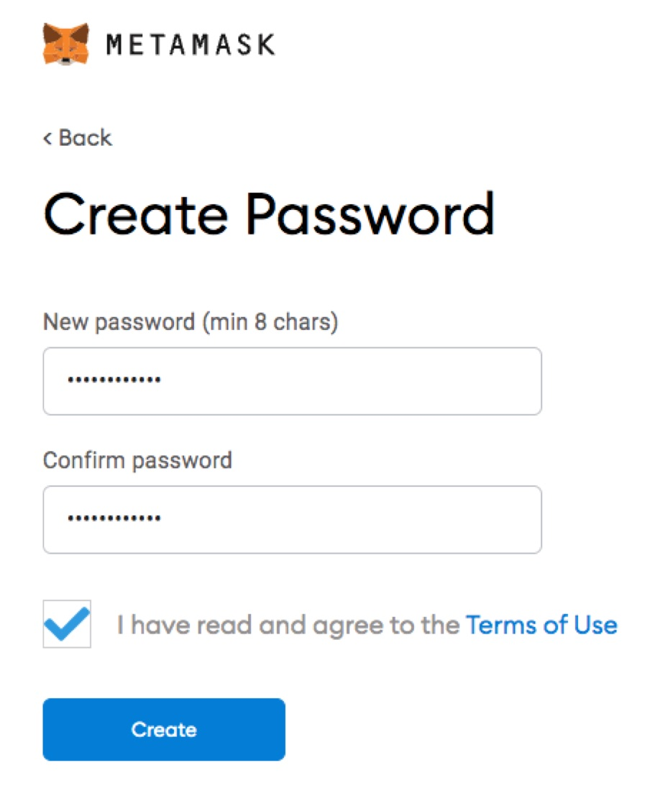
➎
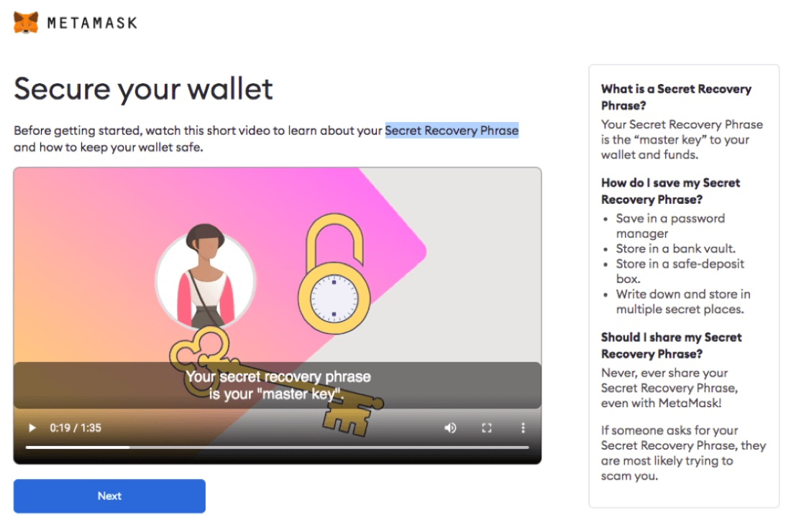
The secret key is represented by 12 words. Uou should never reveal these are 12 words. Whenever you are asked to do so, somebody is trying to scam you.
In the next step, MetaMask will display these words once and once again make sure that the words have been noted correctly. After that, MetaMask will never ask you to enter these words again. You only need the words to restore your wallet on another computer or mobile phone.
Please never re-enter the 12 words in the event of an alleged "technical problem". It is also never necessary to share the 12 words with a stranger. Again: Whenever you are asked for the 12 words, it is guaranteed to be a scam!
➏
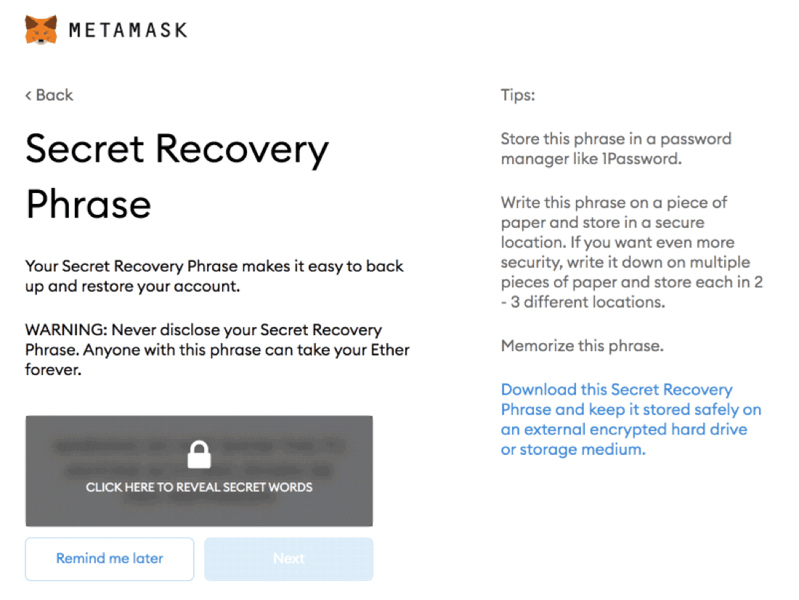
Our advice is: Use a piece of paper and pen and write the words down by hand. Do not make a digital copy of the words. Also, do not photograph the screen with your smartphone. The 12 words are much safer in the physical world than they are in your computer or in the cloud.
Afterwards, hide the note in a safe place and involve a trusted person. If something should happen to you, then the trusted person can dispose of your assets in your sense with the help of the 12 words.
The words shown in the screenshot are, of course, just made up. A real seed phrase is a simple English word such as: "witch collapse practice" etc.
Click on "Next" to complete this important step.
➐
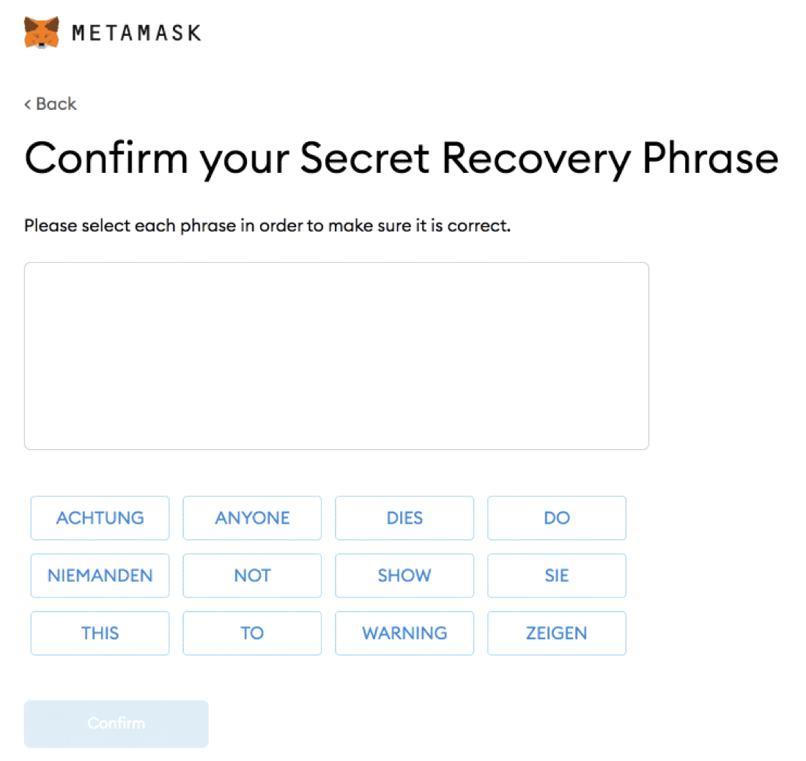
If the sequence is correct, the "Confirm" button becomes active and you can confirm the next step.
➑
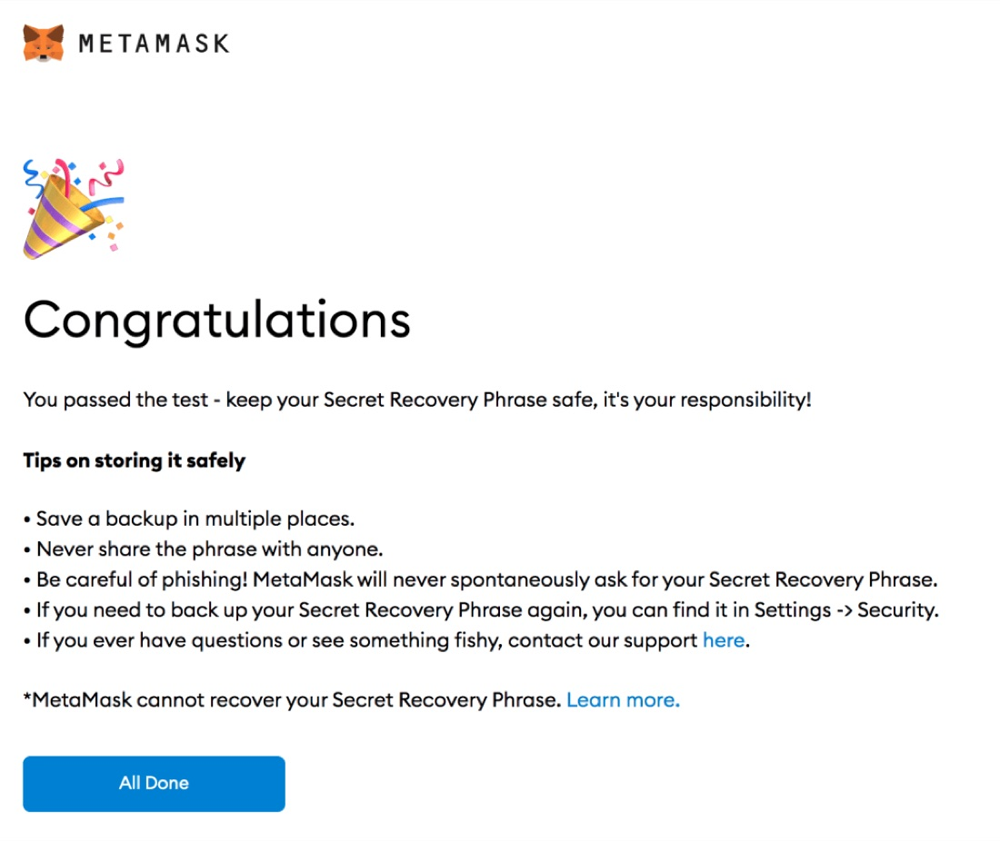
You have successfully set up MetaMask.
The button "All Done" ends the wizard.
The digital wallet (MetaMask) is now ready for use. If you have followed the installation instructions, an overview will now appear showing your credit balance. The main "currency" on the Ethereum blockchain is called Ether (symbol: ETH). Of course, you don't have any funds in the wallet yet - after all, it's only just been set up.
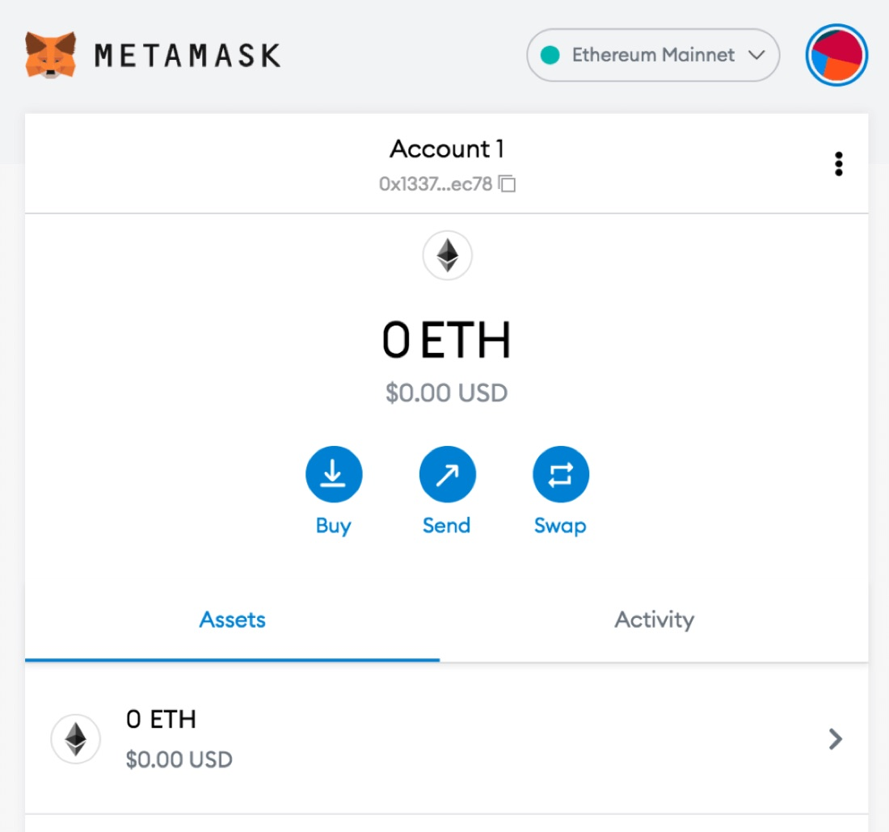
If you restart the Chrome browser, this view will not reappear immediately. Instead, you'll see your usual home page. To see the MetaMask overview again, you must first unlock MetaMask again. For this we recommend to pin the extension:
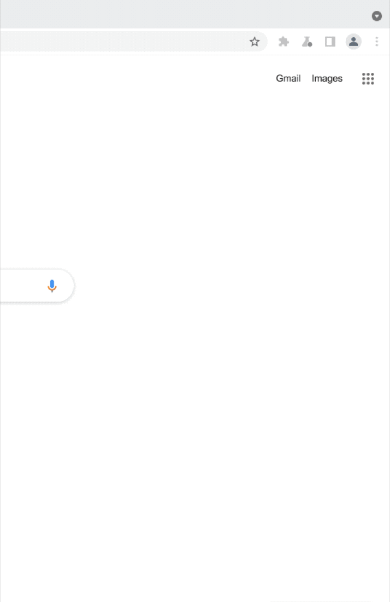
3. Fund the wallet (including price comparison)
To buy an NFT, you need money, of course. On the Ethereum blockchain, the native coin ETH is accepted everywhere. By the way, for technical reasons, ETH is also available as an ERC-20 token. This token is then called "wrapped ETH" (wETH). ETH and WETH have the same value and are easily interchangeable at any time. On the OpenSea marketplace you can use both variants. Instead of the symbol "ETH", you will also see the official logo  or the sign Ξ on some marketplaces.
or the sign Ξ on some marketplaces.
Depending on the payment method, some time will pass before your first Ether appears on the wallet. We therefore want to take this step at an early stage. For starters, you could load your wallet with the equivalent of €1,000 worth of ETH, for example. There are various ways to convert bank money into cryptocurrency for this purpose. In this article, we present two options. In the first option, we directly load the wallet via Apple Pay, credit card or SEPA bank transfer; in the second option, we first deposit at a crypto exchange and then transfer the money to the wallet.
Note: We have recorded all the examples listed below in quick succession. The prices shown can therefore be compared with each other. However, when you read this article, the current market prices will of course differ from our examples!
Charge by credit card via MetaMask
The company behind MetaMask is currently working with two vendors:
- Wyre - accepts Apple Pay and credit cards for German customers
- Transak - accepts bank transfers and credit cards for German customers
The process works the same for both providers. After clicking on "Buy" we first select the respective service. You will then be redirected to the website of the respective provider. The address of the own wallet is transferred with it, so that here no wrong input is possible. On the provider's page we now have to select the desired amount as well as the preferred payment method and follow the further instructions. It is worth paying attention to the fees, they differ from each other. When paying via Apple Pay or credit card, the desired amount should appear on the Wallet within minutes. When paying by "classic" bank transfer, Transak states the processing time to be up to three business days. (Unfortunately, we do not know whether payment by instant bank transfer is possible. Feel free to email us at [mail]team@haushoppe.de[/mail] if you've tried this route!).
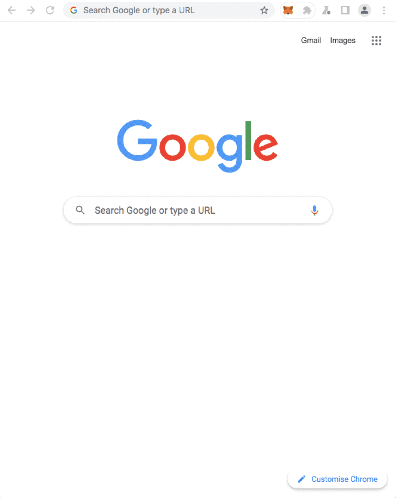
We buy ETH directly with EUR. With a payment of just under €1,000 we receive 0.313 ETH?!
I'm afraid not! The fees are added to the total invoice. Therefore, we have corrected the amount payable to €964. The fees in the amount of €35.84 are added to this. The conversion rate of €3,192.72 could be a little better.
In the end, we receive exactly 0.30199069 ETH for €1,000.
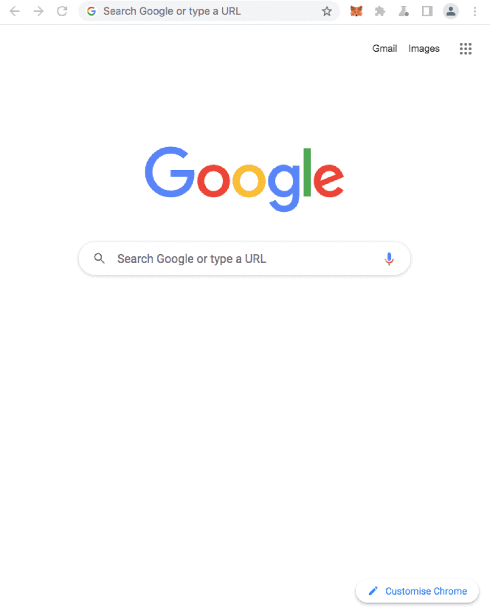
We buy ETH directly with EUR. For a payment of €1,000 we can expect fees in the amount of €52.64. The fees will be deducted from the total amount. This more transparent presentation appeals to us more. We are offered a more lucrative conversion rate than the example at Wyre and can expect to have 0.31012825 ETH in the wallet after all.
In this example, the comparison saves the equivalent of around €25. As already mentioned, we recorded both examples shortly after each other.
Purchase and transfer ETH via crypto exchange
The direct purchase of coins via MetaMask simple and convenient. However, you should also check the major crypto exchanges if necessary. As long as you don't mind the extra effort because of the obligatory registration, you will get slightly better conditions here according to our experience.
We again consider two providers in this case:
- Coinbase - is one of the largest providers based in California, which strives to maintain an impeccable reputation. Coinbase holds a European banking license and even a German crypto custody license. The company pursues a strategy of cooperating with government agencies to the best of its ability. Safety is just as important here. Coinbase is one of a handful of exchanges that has never officially been hacked.
- Binance - is the most famous and largest crypto exchange in the world. Binance is famous and notorious for doing its best to avoid regulation by government agencies. This happens, for example, due to an unclear corporate structure in different jurisdictions. The principal place of business is considered to be unknown. However, Binance is very popular with trading professionals: the liquidity on each trade pair is excellent and the fees are very low in many places.
The procedure is similar for both providers. First, we may need to re-register. We then navigate to the "Buy" page. At Coinbase, we can do this via the prominent "Buy / Sell" button. At Binance, we can find "Buy Crypto" right at the top of the menu.
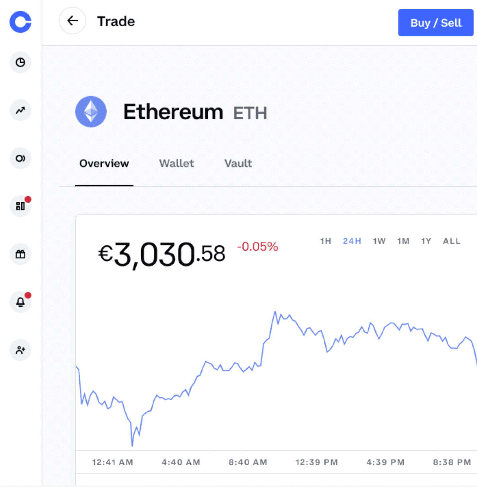
We buy ETH with EUR. In the example shown, we pay €1,000 with the credit card and receive an amount of 0.3156688 ETH in return. The fees in the amount of €38.37 will be deducted from the amount.
After the purchase, however, the Ethers are not actually owned by us yet, as they continue to be held in custody for us by Coinbase.
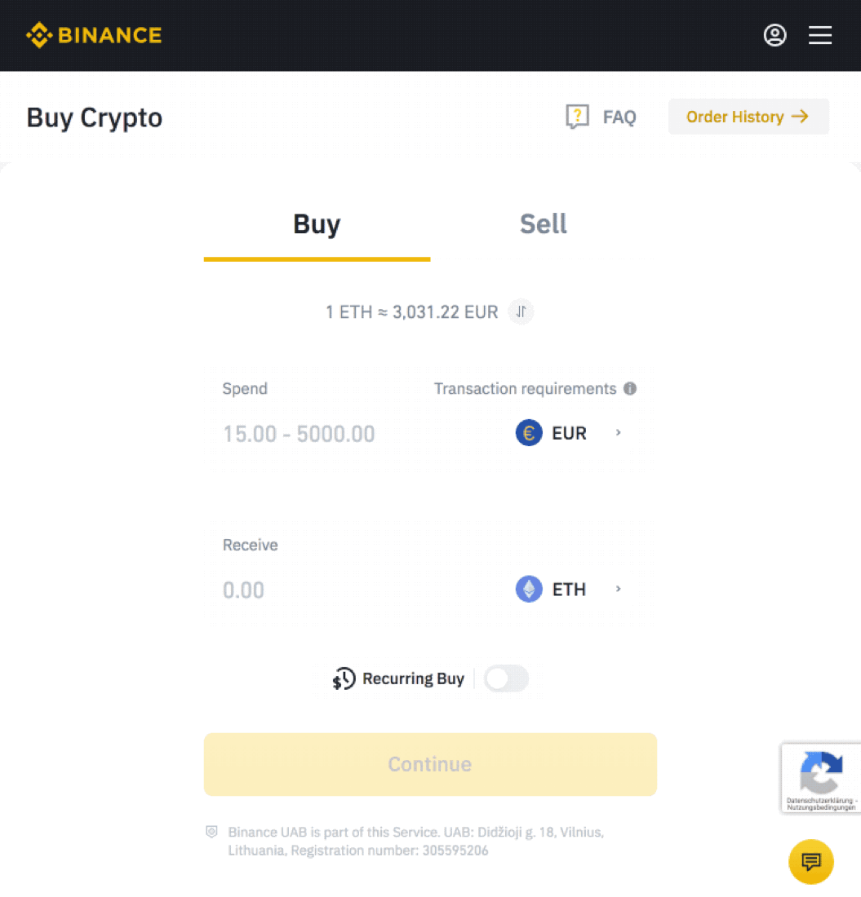
We buy ETH with EUR. In the example shown, we pay again by credit card. For €1,000 we get a whole 0.330 ETH! However, the costs incurred are presented in a rather non-transparent manner. We are not shown any charges at all. Only the conversion rate is visible. But through the previous examples, we know that we are just presented with the best price in the test.
These coins are also not yet in our possession. Our money is held for us by Binance after the purchase.
In order to be our own bank, we want to transfer it to our self-managed MetaMask wallet. To do this, we need to know the public address of the wallet. It is best to simply copy the address to the clipboard as shown here:
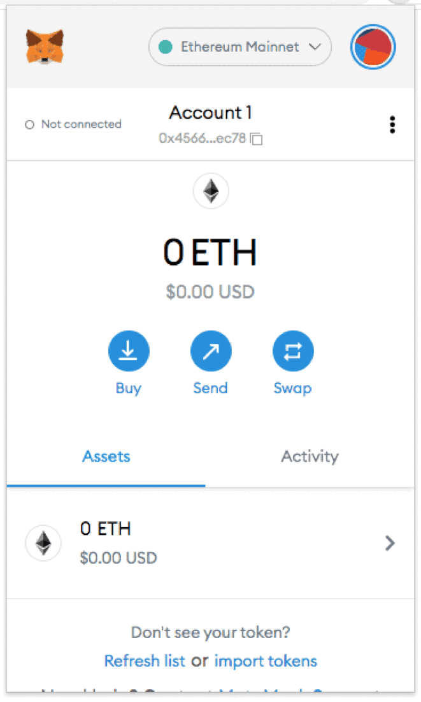
At Coinbase, we press the "Send / Receive" button to transfer ETH, which can be found right next to the "Buy / Sell" button. At Binance, navigate to "Wallet > Overview > Withdraw".
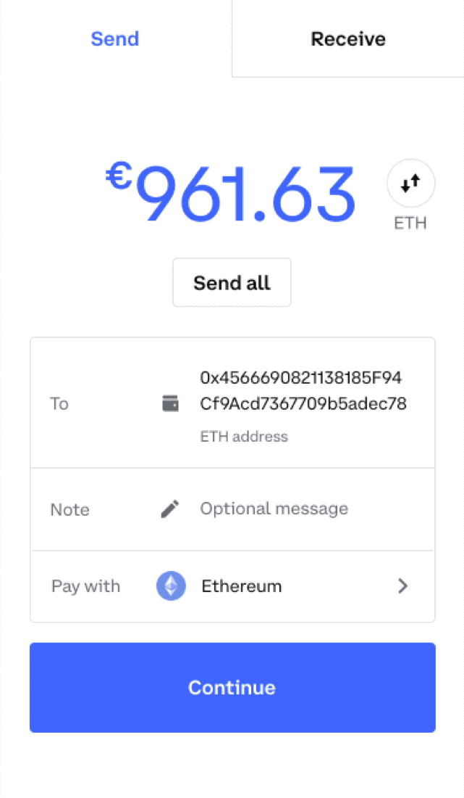
We send the ether we just purchased to our own address. Apart from the technically necessary network fees, no further costs are incurred. Since the price of ETH is constantly moving, €961.63 now corresponds to a different amount of ETH.
The network fee of 0.003045 ETH shown for this moment is always the same, no matter how much ETH we send. From the previously purchased ETH at a total price of €1,000, we will end up owning 0.3126238 ETH in our wallet.
If we compare this result with the first amount of Wyre, we hold 0.01063311 ETH more in the wallet. If we measure this with an exchange rate of €3,192.72, we have saved about €33.
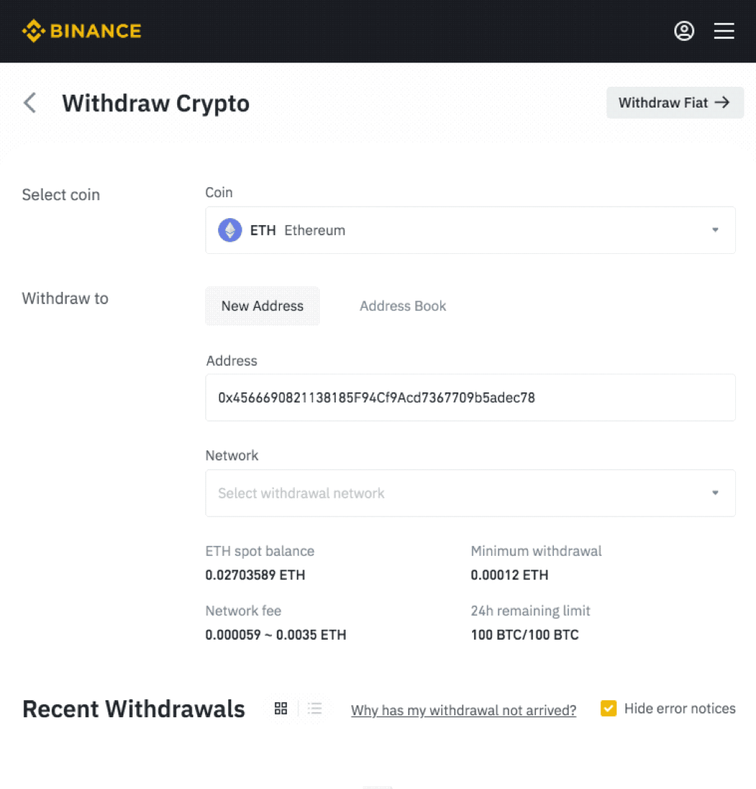
Again, we send the previously purchased Ether to our own wallet address. Binance is quoting network fees at 0.0035 ETH for this moment.
From our previously purchased ETH at a total price of €1,000, we end up with 0.3265 ETH paid out in our wallet. That is the highest amount in this simple test.
If we compare this result with the first amount of Wyre, we hold 0.02450931 ETH more in the wallet. If we measure this with an exchange rate of €3,192.72, we have saved about €78.
Conclusion: Buy Ether (ETH) with bank money
As this test has shown, you always get a different amount of ETH for the same amount of Euros. This can be explained in part by the permanently fluctuating stock market prices. The biggest difference, however, comes from the fees charged. However, there was no extreme deviation in any of the suppliers examined. So you don't get "ripped off" anywhere. With Wyre and Transak you have less effort, this comfort costs a few euros more. Thrifty people will prefer Binance. In the case of Binance, however, we recommend that you do not leave the ETH you have acquired on the exchange for a longer period of time. In the crypto community, the motto is: "Not your keys, not your coins". If we have the coins stored on an exchange, we do not hold the keys to the assets.
Regardless of the provider chosen, the following principles also apply:
- If you want to receive a one-time amount in your Etherum wallet, it is best to purchase a higher amount. Then the network fees don't matter so much.
- If you want to acquire smaller amounts of ETH on a recuring basis (e.g. €250 per week, cost average effekt), it is worthwhile to acquire via a centralised exchange such as Coinbase or Binance. Both providers offer automatic recurring purchases. Then, as soon as a higher amount is held in custody for you, you should transfer the accumulated ETH in a single transaction to secure it.
4. Select an NFT marketplace
You have purchased Ether (ETH). But you are not there yet, after all you want to buy a Non-Fungible Token (NFT) on a marketplace. If you want to get an overview of the available NFT marketplaces, the portal DappRadar offers a good overview: → DappRadar: NFT Marketplaces for Ethereum.
Based on DappRada's trading volume, it's easy to see that the largest marketplace for art, digital collectibles, and many other types of NFT is OpenSea. The other marketplaces such as
follow with distance. It is good to know that you can also purchase NFTs from the other marketplaces directly via OpenSea. There, the respective collection is listed as: Rarible Collection, SuperRare Collection, Foundation (FND) Collection. We therefore recommend that you first familiarize yourself with OpenSea to get started.
Attention! There are fake websites that look exactly like OpenSea. We have seen ads on Google for such scam sites ourselves. Therefore, it is better not to search for the name in a search engine. It is best to enter the following website manually into the browser:
5. Select a suitable NFT (presentation of 3 strategies)
Now the most difficult question arises: which NFT should you buy? For artwork and collectibles, we can give you a few ideas. But we are also happy to include your tips here.
First of all, you should be clear about the motivation behind the purchase of the NFT. These could include, but are not limited to:
- Motivation 1: Enjoyment of art. You are looking for an aesthetic, humorous or even cool piece of art to enrich your environment. You could also visit a traditional gallery or attend an art opening. But you won't find much digital art there these days, and even less digital art on the blockchain. Digital art in particular is suitable for digital canvases, which show off changing motifs to suit the ambience or your mood. Of course, if one of the NFTs then experiences an increase in value, this is a nice aspect for you, too.
- Motivation 2: Speculation on value growth. Let's not kid ourselves. NFTs are a growing market, the topic is trending and you want to grow your capital above all else. Why not? You are looking for NFTs where you can sell the tokens for more ETH than you have invested over a short to medium term time horizon.
- Motivation 3: Social media status. Musicians, professional athletes and other celebrities lead the way. They want to own a coveted NFT and proudly display it on social media like Twitter as a profile picture. This trend has become so popular that Twitter is even working on verifying NFTs.
This list is not exhaustive. We have not considered the importance of NFTs in computer games, as utilities such as domain names (.eth domains) and other use cases.
Motivation 1: Enjoyment of art
You are probably looking for the art of a person who has created a single work through a creative process. By the way, these really unique NFT are called "1 on 1". Some creators carft the work directly digitally, others first create the work in the physical world and then digitize it. The price range varies enormously for these works, depending on the notoriety of the artist in the digital world. In your search, for example, you can browse the category "Art" on OpenSea: Explore Art on OpenSea. However, you will find that OpenSea allows anyone to participate and the collections are not manually curated. The collections that are currently trending are displayed first. The trend is always measured by current sales.
SuperRare sets itself apart from this open practice. Only artists previously selected by SuperRare can present their work here. The criteria for selection at SuperRare are not publicly known. Furthermore, the number of works is limited by the fact that only fully digital artworks (digitized works are excluded) are accepted. Foundation is pursuing a more open strategy. Here new creators have to be invited by existing members.
Away from the marketplaces, it can also be worth searching for works on the social network Instagram. Instagram has always had a high reach for photography and short videos. Many classic artists, graphic designers and photographers are represented on Instagram, but also well-known and undiscovered NFT artists present themselves here. For example, you can search for the following hashtags:
About the growth of value for blockchain art
The advantage of "beautiful NFT art" is that the associated NFTs often remain stable in value and may slowly increase in value over time. We remain convinced of a long-term positive development of the price of Bitcoin and Ethereum. Please note: All NFTs are always denominated in the respective cryptocurrency. So if you buy an NFT for an ETH, the ETH may have increased in value in the meantime. If you sell the NFT again for the same ETH price, you have made a profit considering the value of the bank money. However, you could have just held the coin in your wallet to do so. In addition, it is by no means guaranteed that a new buyer will be found for a particular work of art.
As with any investment, don't go "all in" right away, and likewise don't sell everything as soon as the value of a collection starts to trend positively. We recommend the following procedure: Buy rather 2-3 artworks from the same collection. If you like, you can also do it slowly over time. If the value of the artwork increases, then sell a token to secure your original investment. Hold the second token or the third token longer. If the trend ebbs, you have not made a loss at all. Nevertheless, you still own one or two works of art that you can enjoy. If the remaining tokens experience a rapid increase in value, you are still in the game. You may even have the next Beeple (see this article) in your portfolio? In the crypto world, people talk about a "moon bag" where they secretly hope that one of the NFTs is the ticket to winning the lottery.
Motivation 2: Speculation on value growth
You can, of course, speculate on the performance of art. But there are also more aggressive and short-term approaches. There are quite a few investors who do professional trading with NFT. As with the stock market, there are different time horizons here. From the day trader to the investor with "diamond hands", everybody is there. Investing is all about recognizing the next trend early enough, getting in at the right time and, above all, getting out at the right time.
Collections
On OpenSea you will find the term "Collection". Each creator or team can publish any number of collections. On OpenSea the collections are somehow presented like collections in an arts gallery. Some creators publish all their works under the same collection, others use collections to group their works. From a technical perspective, a collection always represents a smart contract, which in turn manages its NFT on the blockchain. Since an NFT cannot change smart contracts, it always remains part of the same collection - even if the token changes his owner.
Algorithmically generated works
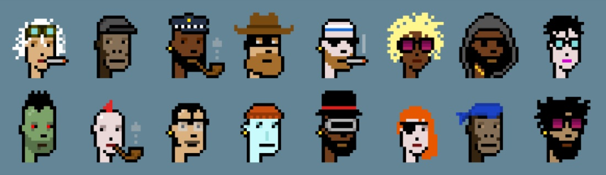
For the risk-averse investor, those collections are particularly interesting, where there is a very large number of pieces. Pioneers in this field are the CryptoKitties and especially the Crypto Punks, of which 10,000 uniquely generated characters exist. Originally, punks could be claimed ("minting") for free. Meanwhile, the floor price is at 100 ETH. Among the "NFT blue chips" on the scene are the Pudgy Penguins and the monkeys of the Bored Ape Yacht Club (BAYC).
Of course, every publisher tries to set a trend with their collection. Often, however, these are only simple copies of already successful collections. Punks, penguins, monkeys, dogs, cats, etc. - all this is not new. In such cases, long-term success is unlikely. It is therefore very important to intensively examine the fundamentals of the respective projects. While there can be short-term hype even with a weak foundation, by then the players with lots of capital and automated buying programs (bots) are guaranteed to be several steps ahead. Soon after, highly hyped projects are worthless again. Moreover, an offer to buy at the floor price does not mean that a buyer will actually be found for an NFT. There is a very real danger of being "stuck" with an NFT forever. In very blatant cases, a project does not even deliver on its promises. These scams are called "scams" or "rug pulls". For example, pleople are encouraged to first buy an unrevealed NFT and the metadata is to be published later. People hope to get lucky and get hold of a particularly rare NFT. However, there is a risk that this will never happen, that insiders will have advance insight (securing the rarest copies before anyone else) or that the published results will not be of the expected quality. You should not rely too much on the principle of luck. The particularly rare pieces are so expensive because it is extremely unlikely to obtain one by chance.
Read more on the topic at: → Analyze and evaluate NFT
Fractionated NFT
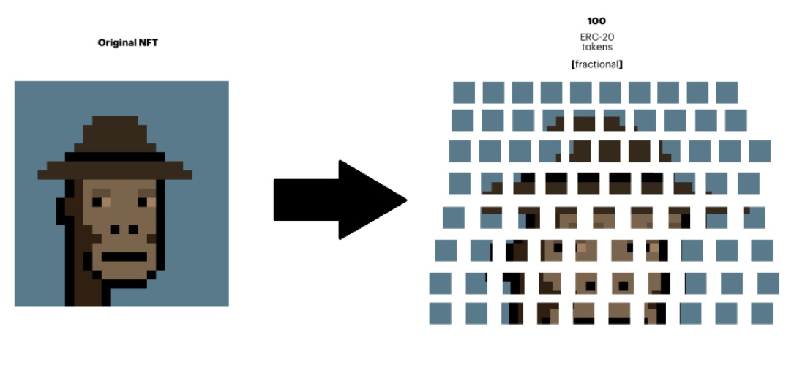
Only a few people have the necessary capital to invest in a famous NFT project like the Crypto Punks or the Bored Apes. And even if the necessary capital could be raised: Every portfolio should be diversified. An extremely high-priced NFT stands in the way of that. So how is it possible to participate on the growth of value? You need a fraction of something that is actually indivisible. However, it is technically impossible to split an NFT. But of course, the crypto world has long since found a way around indivisibility: fractional NFT (F-NFT). These are fungible ER-20 tokens that represent a share of the original NFT. You can purchase these ERC-20 tokens on decentralized exchanges like UniSwap and SushiSwap on a regular basis. Strictly speaking, however, it is not NFT, so we deal with various NFT derivatives in a separate article.
Continue reading in: → NFT derivatives
Motivation 3: Status in social media
Profile pictures ("PFP" for short) stand for a separate class at NFT. These are unique avatar images that you can use as your Twitter profile picture, among other things. The Crypto Punks can also be classified as PFP. Usually these images in square format or in portrait format. Celebrities and influencers use expensive purchases to get attention on social media. It's effectively the digital equivalent of a Lamborghini. Of course, not everyone can afford to buy an exotic car - and not all people want "to flex" such a status symbol. Indisputably, however, PFP-NFTs offer their owners the opportunity to express themselves while belonging to a community that shares their values. And the more celebrities show their NFT, the more the value of that NFT or NFT collection usually increases.
A glimpse of the future potential is offered by the following tweet, in which a Twitter employee shows a prototype. In the video, a new badge is added to the profile picture that resembles the badge of a verified account. The new badge is to confirm the authenticity of the PFP, so that no one can adorn themselves with foreign feathers.
For many businesses, a strong reputation and social media reach is already an important part of marketing. In the process, there will certainly be more and more points of overlap between the blockchain "metaverse" universe and social media. It is therefore worth considering early on to find an authentic NFT that expresses your digital identity well.
6. Buy an NFT on OpenSea
You have found an NFT that is ready for purchase. In the following we will show you how to proceed.
First you need to log in to OpenSea, this is done conveniently with the wallet - in our example we use MetaMask. To do so, simply click on the user icon in the top right corner and connect the wallet to the website. That's about it. You do not have to provide any personal data.
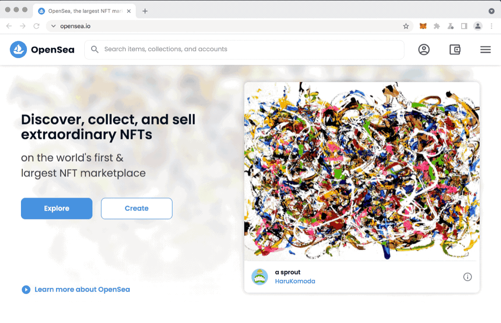
Press the "Buy now" button and follow the instructions. We have captured the entire purchase process as a video. Within seconds you own your first NFT:
n[automatic_youtube_gallery type="video" video="IMJ7T4Jfprg" player_ratio="59" player_title="0" player_description="0" autoadvance="0"]nIn the video, you can see a website with the Ethereum Gas Charts to better estimate the evolution of the transaction fees. It is a good idea to make the purchase when gas prices are cheap. Gas prices show us what other Ethereum users are currently willing to pay for a confirmation of your transaction. The gas price is calculated in Gwei, the smallest unit of Ether. The more "tip" you give the miner for the transaction, the faster the transaction will be completed.
Note: Each transaction starts in a queue at the beginning. The technical term for this queue is "mempool" or "transaction pool". Each miner has its own mempool and synchronizes it with the other network participants. In the video we open the website Etherscan. Our transaction has not yet arrived at this service provider: "Sorry, We are unable to locate this TxnHash". If you also see this message, then everything is still fine. As explained further down the website, the transaction still needs to be advertised on the network. It is therefore not necessary to "speed up" the transaction using the "Speed Up" function. Provided the tip is generous enough, our transaction is very likely to be included in one of the next blocks.
Done! 🎉
Was the transaction successful? If, yes - then welcome! You are now a part of the NFT community. Enjoy the moment and enjoy your unique piece. You can keep it and enjoy it. If you like, you can later trade your NFT with other users or sell it. You are now the only person in the world who can determine the further use of the NFT.
Continue reading in: → Analyze and evaluate NFT
Continue reading in: → NFT derivatives
Thanks a lot
Should you have read this article throughout, then you will certainly have a solid start into the world of NFT. Thank you so much for walking this path with us! Did you know that this website is run by an artist? Olaf Hoppe has been active as a painter and graphic artist for more than 50 years and has built up a large pool of masterpieces. You can enjoy many works in the physical world in his gallery or do so online on the artworks page. We offer a small selection of unique pieces at OpenSea. We are also happy to bring a unique piece exclusively for you on the blockchain. To do so, simply email us at [mail]team@haushoppe.de[/mail] or contact us on Instagram.
The following works by Olaf Hoppe are currently available as NFT at OpenSea
purchase:
About the author
Johannes made his first bitcoin transaction in 2013. He has been fascinated by cryptography and the cypherpunk ethos ever since. He is a cypherpunk at heart, which is why pretty much everything he builds, like ordpool.space, is open source and free.
More in this series
Background knowledge on blockchain tokens
What sits underneath: token standards, and what fungible and non-fungible really mean.
Analyze and evaluate NFT
How to look at a collection before buying into it, and which risks are worth checking.
NFT derivatives
Fractional ownership, indices and the things that look like NFTs but are not.
On Cyber galleries and Collabs
A walkthrough of the gallery software The Angels' Wing was built on, written with CasperB.